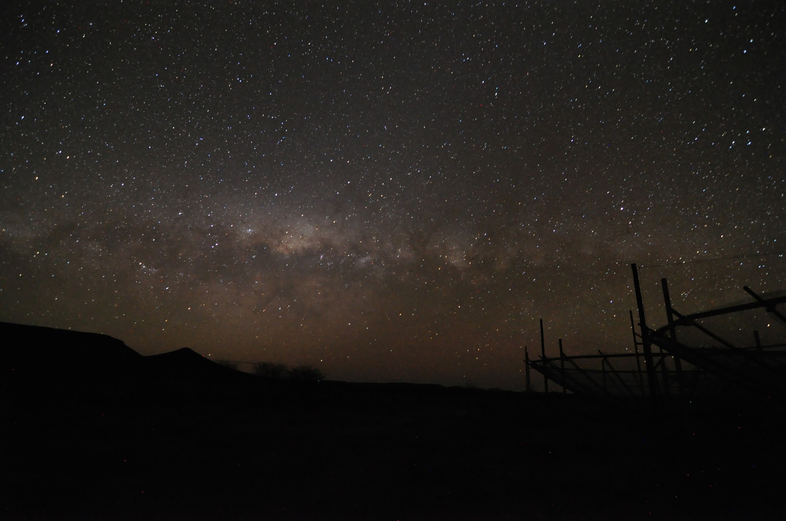

I'm interested in cosmology and specifically, in 21 cm cosmology. 21 cm cosmology is a new and upcoming field that uses the rare, spontaneous line transition of neutral hydrogen, which emits a 21 cm wavelength photon, to map the universe. Hydrogen, being the most abundant element in the universe, lends it self as a natural candidate to try to map all of the unexplored sectors of the universe. Current all sky surveys only cover a small volume of the observable universe because they count single galaxies. However, 21 cm cosmology uses a technique called intensity mapping, where it integrates over galaxies and produces a map of the distribution of the 21 cm emission. Therefore, we are able to use statistical techniques to measure the global properties of the universe.
I am using intensity mapping to try and understand the state of the universe when the first stars and galaxies formed during a period known as the Epoch of Reionization. This era occurred around a billion years after the big bang, after the Cosmic Microwave Background (CMB) radiation was released. During this time, the universe consisted of neutral hydrogen, helium, and trace amounts of lithium. The universe was quite boring during this time as astrophysical objects hadn't formed yet. Because of slight over-densities in the gravitational potential of the universe (set by quantum fluctuations from inflation), hydrogen began to clump up until the densities of the clumps grew large enough such that the first stars were able to form. These sources emitted UV radiation, which has the energy to ionize neutral hydrogen. This event turned the Intergalactic Medium (IGM) into an ionized medium, which is what we observe today. By studying this era in the universe we are able to answer some intriguing questions such as what were the first sources in the universe like and what is the thermal history of the universe.
There are two experiments that I work on in my research: PAPER and HERA. Both of these experiments are located in the middle of the Karoo Desert in South Africa; about a 9 hour drive from Cape Town. Due to the expansion of the universe, the 21 cm photons we are looking for are redshifted down to 2 meter wavelengths, corresponding to frequencies between 100-200 MHz. This range of frequencies is right in the middle of communication radios and FM radio. This requires that these experiments are built in the middle of nowhere, away from civilization, in order to minimize interference with the astrophysical signal. This also adds to one of the perks of working in radio astronomy: it takes you to remote places of the world, typically with extreme conditions.
-------------------------------Under Development-------------------------------------